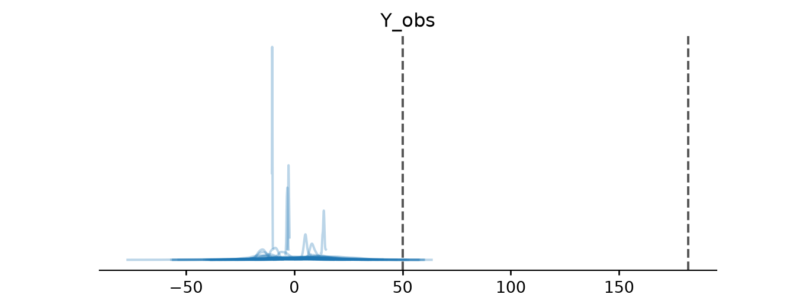
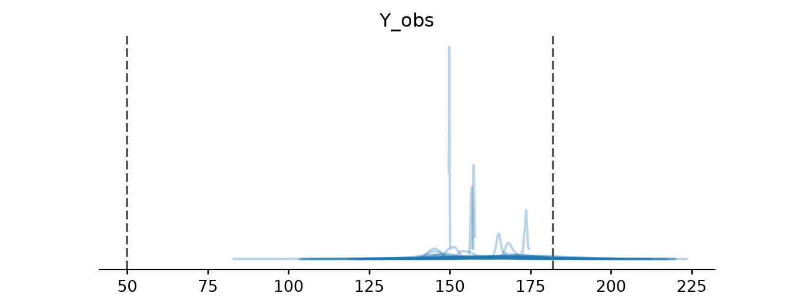
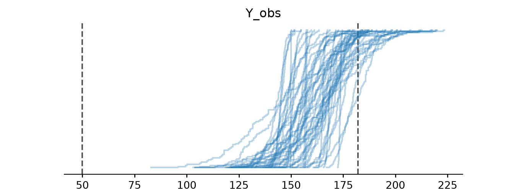
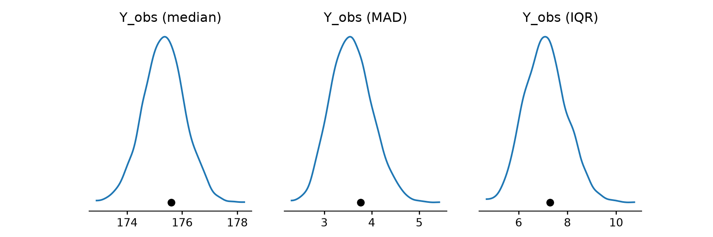
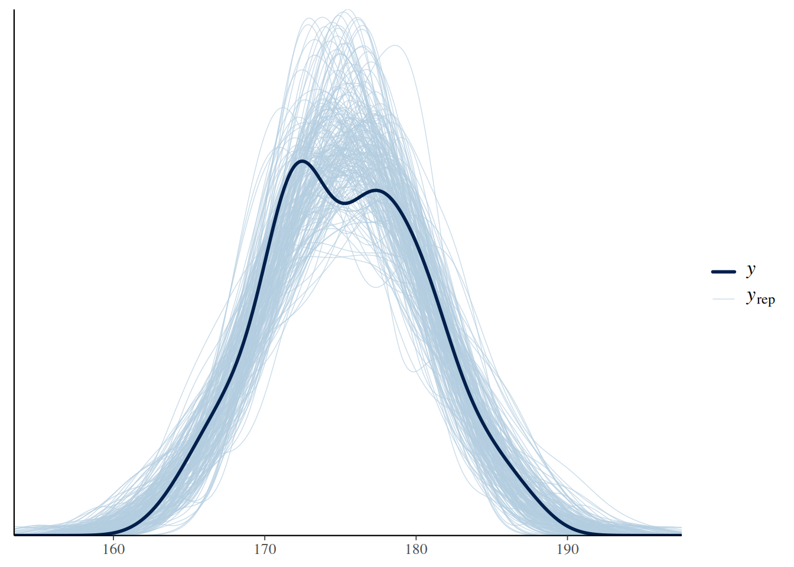
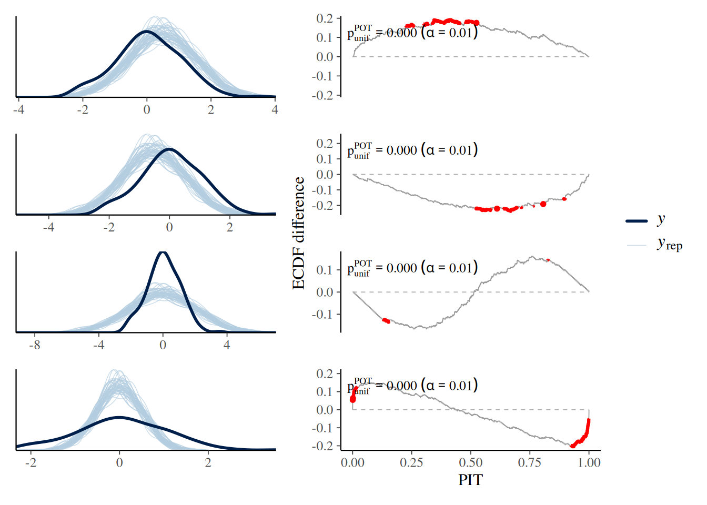
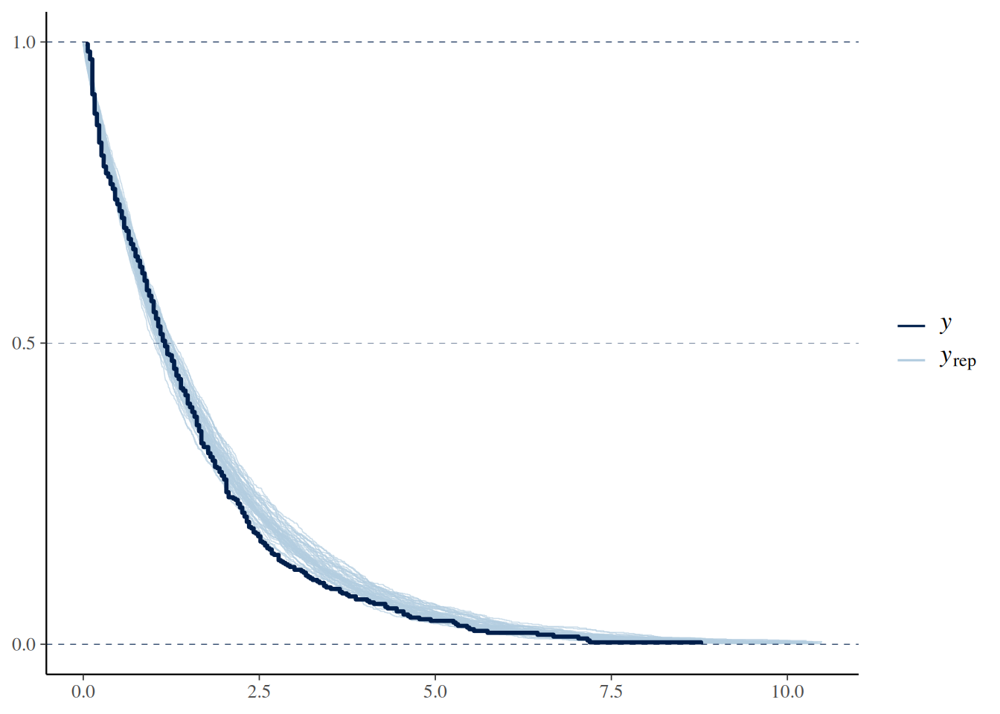

4 Prior and Posterior predictive checks
Models are simplifications of reality, sometimes even very crude simplifications. Thus, we can never fully trust them. While hoping they are good enough is an option, we should try to do better. One general approach to criticizing model is to judge them by their predictions. If a model is robust, its predictions should align well with observations, domain knowledge, or some other benchmark. There are at least four avenues to explore:
Compare to prior knowledge. For example, if we are modelling the size of planets we can evaluate if the model is making predictions in a sensible range. Even if we are equipped with a very rudimentary knowledge of astronomy we know that planets are larger than persons and smaller than galaxies. So if the model is predicting that the size of a planet is 1 meter, then we know that the model is not that good. The better your prior knowledge is, the better you will be able to critique your model assumptions. If you are not an expert in the field, and maybe even if you are, you can always try to find someone who is.
Compare to observed data. We fit a model and compare the predictions to the same data that we used to fit the model. This is an internal consistency check of the model, and we should expect good agreement. But reality is complex and models can be too simple, or they can be misspecified so there is a lot of potential in these types of checks. Additionally, even very good models might be good at recovering some aspects of the data but not others, for instance, a model could be good at predicting the bulk of the data, but it could overestimate extreme values.
Compared to unobserved data. We fit a model to one dataset and then evaluate it on a different dataset. This is similar to the previous point, but this is a more stringent test because the model is being asked to make predictions on data that it has not seen before. How similar the observed and unobserved data are will depend on the problem. For instance, a model trained with data from a particular population of elephants might do a good job at predicting the weight of elephants in general, but it might not do a good job at predicting the weight of other mammals like shrews.
Compare to other models. We fit different models to the same data and then compare the predictions of the models.
As we can see there are plenty of options to evaluate models. But we still have one additional ingredient to add to the mix, we have omitted the fact that we have different types of predictions. An attractive feature of the Bayesian model is that they are generative. This means that we can simulate synthetic data from models as long as the parameters are assigned a proper probability distribution, computationally we need a distribution from which we can generate random samples. We can take advantage of this feature to check models before or after fitting the data:
- Prior predictive: We generate synthetic observations without conditioning on the observed data. These are predictions that we can make before we have seen the actual data.
- Posterior predictive: We generate synthetic observations after conditioning on the observed data. These are predictions that we can make after we have seen the data.
Additionally, for models like linear regression where we have a set of covariates, we can generate synthetic data evaluated at the observed covariates (our “Xs”) or at different values (“X_new”). If we do the first we call it in-sample predictions, and if we do the second we call it out-of-sample predictions.
With so many options we can feel overwhelmed. Which ones we should use will depend on what we want to evaluate. We can use a combination of the previous options to evaluate models for different purposes. In the next sections, we will see how to implement some of these checks.
4.1 Prior predictive checks
The idea behind prior predictive checks is simple: if a Bayesian model is reasonable, it should be capable of generating data consistent with our prior knowledge. These are called prior predictive checks because the synthetic data is generated before observing the actual data.
Consider a Bayesian model consisting of a data model
\[ p(y \mid \theta) \]
and a prior
\[ p(\theta). \]
The prior predictive distribution is obtained by combining these two components:
\[ p(y) = \int p(y \mid \theta)\, p(\theta)\, d\theta. \]
The general algorithm for prior predictive checks is:
- Draw \(\theta^{(1)}, \ldots, \theta^{(N)} \sim p(\theta)\).
- For each draw \(\theta^{(i)}\), simulate data \(y^{(i)} \sim p(y \mid \theta^{(i)})\).
- Plot the simulated data.
- Use domain knowledge to assess whether the simulated data reflect prior knowledge.
- If the simulated data do not reflect prior knowledge, modify the prior distribution, the data model, or both, and repeat from step 1.
- If the simulated data reflect prior knowledge, compute the posterior.
Notice that in step 4 we use domain knowledge, not observed data.
To exemplify a prior predictive check, let’s try with a super simple example. Let’s say we want to model the height of humans. We know that the heights are positive numbers, so we should use a distribution allocating zero mass to negative values. But we also know that at least for adults using a normal distribution could be a good approximation. So we create the following model, without too much thought, and then sample 500 draws from the prior predictive distribution.
data {
int<lower=0> N;
array[N] real y;
}
parameters {
real mu;
real<lower=0> sigma;
}
model {
// Priors
mu ~ normal(0, 10);
sigma ~ normal(0, 10);
// Likelihood
y ~ normal(mu, sigma);
}
generated quantities {
real prior_mu = normal_rng(0, 10);
real<lower=0> prior_sigma = abs(normal_rng(0, 10));
array[N] real y_prior_pred;
for (i in 1:N) {
y_prior_pred[i] = normal_rng(prior_mu, prior_sigma);
}
}The figure below displays samples from the prior predictive distribution (shown as solid blue lines). To aid interpretation, we have included two reference values: the average length/height of a newborn (approximately 50 cm) and the average height of adult males in the Netherlands (around 182 cm). Reference values are meaningful benchmarks derived from domain knowledge—not from the observed data—and help assess whether predictions are on a reasonable scale. While there are no strict rules for selecting reference values, different analysts might choose different benchmarks based on context
We can see that our model is bananas the bulk of the prior predictive distribution is outside of our reference values and the model is predicting values below 0. This is a clear indication that the model is not a good representation of our prior knowledge.
In many cases, data will be informative enough to overcome poorly selected priors, but this isn’t guaranteed. To address this, we can tighten our priors. While there’s no universal rule for doing so, a good guideline is to choose priors that concentrate most of the prior predictive distribution’s mass within a plausible range—such as between our reference values.
Such priors are often called weakly informative priors. Though not strictly defined, these priors produce a prior predictive distribution with little to no probability mass in unrealistic or impossible regions. For example, a normal distribution with a mean of 160 and a standard deviation of 10 assigns negligible weight to negative values while still accommodating a wide range of plausible heights.
data {
int<lower=0> N;
array[N] real y;
}
parameters {
real mu;
real<lower=0> sigma;
}
model {
// Priors
mu ~ normal(160, 10);
sigma ~ normal(0, 10);
// Likelihood
y ~ normal(mu, sigma);
}
generated quantities {
real prior_mu = normal_rng(160, 10);
real<lower=0> prior_sigma = abs(normal_rng(0, 10));
array[N] real y_prior_pred;
for (i in 1:N) {
y_prior_pred[i] = normal_rng(prior_mu, prior_sigma);
}
}We repeat the prior predictive checks with the new prior predictive distribution. We can see that the bulk of the prior predictive distribution is within the reference values.
The prior predictive check for the model of heights with a more narrower prior than previous figure. Predictions are closer to our domain knowledge about human heights.


You are free to pick other priors and other reference values and make new prior predictive checks. Maybe you can use the historical record for the taller and shorter persons in the world as reference values.
When plotting many distributions, where each one spans a narrow range of values compared to the range spanned but the entire collection of distributions, it is usually a good idea to plot the cumulative distribution instead of KDEs, histograms, or quantile dot plots.
The prior predictive check for the model of heights. Same as previous figure, but using empirical CDFs instead of KDEs.

4.1.1 A final note about priors
Before moving on to the next section, we would like to share one last thought on priors. If you have access to reliable prior knowledge, you should use it, there’s no good reason to discard valid information. But in many real-world scenarios, turning that knowledge into informative priors often require considerable effort and time. And in some cases, they may lead to results that are nearly indistinguishable from those produced using less carefully chosen priors.
In practice weakly informative priors can offer meaningful advantages over both vague and informative priors. Even a modest amount of prior information is often better than none at all, as it helps guard against implausible or misleading results and it could provide computational benefits, such as improved sampling efficiency while being usually easier and less time-consuming to elicit than fully informative priors.
Finally, one benefit that’s often underappreciated is that running prior predictive checks and playing around with different priors can give you valuable insights into your model and the problem you’re trying to solve, regardless of their impact on their direct impact on the posterior.
4.2 Posterior predictive checks
The idea behind posterior predictive checks is simple: if a Bayesian model is reasonable, it should be capable of generating data resembling the observed data (Gelman et al. 2013). These are called posterior predictive checks because the synthetic data is generated after observing actual data.
The posterior predictive distribution is obtained by combining the data model
\[ p(\tilde y \mid \theta) \]
with the posterior distribution
\[ p(\theta \mid y). \]
The posterior predictive distribution is
\[ p(\tilde y \mid y) = \int p(\tilde y \mid \theta)\, p(\theta \mid y)\, d\theta. \]
The general algorithm for posterior predictive checks is:
- Draw \(\theta^{(1)}, \ldots, \theta^{(N)} \sim p(\theta \mid y)\).
- For each draw \(\theta^{(i)}\), simulate data \(\tilde y^{(i)} \sim p(\tilde y \mid \theta^{(i)})\).
- Plot the simulated data.
- Compare the simulated data with the observed data.
- If the simulated data do not adequately reproduce the observed data, modify the prior distribution, the data model, or both, and repeat the analysis.
- If the simulated data adequately reproduce the observed data, proceed with model interpretation and inference.
Notice that, unlike prior predictive checks, posterior predictive checks compare simulated data with the observed data. Domain knowledge remains useful, but the observed data provide a much more stringent assessment of model adequacy.
Continuing with our height example, we can generate synthetic data from the posterior predictive distribution.
data {
int<lower=0> N;
array[N] real y;
}
parameters {
real mu;
real<lower=0> sigma;
}
model {
// Priors
mu ~ normal(0, 10);
sigma ~ normal(0, 10);
// Likelihood
y ~ normal(mu, sigma);
}
generated quantities {
real prior_mu = normal_rng(0, 10);
real<lower=0> prior_sigma = abs(normal_rng(0, 10));
array[N] real y_prior_pred;
for (i in 1:N) {
y_prior_pred[i] = normal_rng(prior_mu, prior_sigma);
}
array[N] real log_lik;
for (i in 1:N) {
log_lik[i] = normal_lpdf(y[i] | mu, sigma);
}
array[N] real y_rep;
for (i in 1:N) {
y_rep[i] = normal_rng(mu, sigma);
}
}And then visualize the comparison. We can see that the model is doing a good job at predicting the data. The observed data (black line) is within the bulk of the posterior predictive distribution (blue lines).
Other common visualizations to compare observed and predictive values are empirical CDFs, histograms and less often quantile dotplots. Like with other types of visualizations, you may want to try different options, to be sure visualizations are not misleading and you may also want to adapt the visualization to your audience.
4.2.1 Using summary statistics
Besides directly comparing observations and predictions in terms of their densities, we can do comparisons in terms of summary statistics, like the median, the interquartile range, the standard deviation etc. Which ones we decide to use can vary from one data-analysis problem to another, and ideally they should be informed by the data-analysis goals. As in posterior predictive checks we use the data twice, first for fitting the model and then for checking it. It is advisable to select test statistics that are orthogonal to the model parameters (Gabry et al. 2019). For example, in a Normal model with a location parameter, the mean should be easy to recover, so a posterior predictive check using the mean as a test statistic would not be a particularly stringent test. As in many common models there is a location parameter, then the mean is usually not a good test statistic.
We can use the plot_ppc_tstat function to display the posterior predictive distribution of a test statistic. The function takes as input a DataTree with a posterior_predictive and observed_data groups and a name of the test statistic (custom function are also allowed), and it will compute the posterior predictive distribution of that statistic. The function also computes the observed value of the test statistic and plots it as a dot at the bottom of each subplot.
The following figure shows a comparison in terms of the mean, median and interquartile range (IQR). The dots at the bottom of each subplots corresponds to the summary statistics computed for the observed data and the KDE is for the model’s predictions.

`stat_bin()` using `bins = 30`. Pick better value `binwidth`.
`stat_bin()` using `bins = 30`. Pick better value `binwidth`.
`stat_bin()` using `bins = 30`. Pick better value `binwidth`.
If we want a numerical summary of a posterior predictive checks using test statistics we can compute the proportion of simulated data that is less than or equal to the observed data: \[ p(T_{\text{sim}} \le T_{\text{obs}} \mid \tilde y) \]
Where \(T\) is the summary statistic of our choice, computed for both the observed data \(T_{\text{obs}}\) and the simulated data \(T_{\text{sim}}\).
This is known as a posterior predictive p-value (or Bayesian p-value) (Gelman et al. 2013). This is similar to the frequentist p-value, but computed with respect to the posterior predictive distribution, instead of the sample distribution under the null hypothesis.
A posterior predictive p-value of 0.5 indicates that half of the predictions are below the observed values and half above. Posterior predictive p-values do not in general have uniform distributions under the null hypothesis but instead tend to have distributions more concentrated near 0.5 (Gelman 2013). For instance, we already mentioned that the mean is easy to recover for many models and thus the posterior predictive p-value for the mean is often concentrated around 0.5.
The term “Bayesian p-values” may sound like an oxymoron or paradoxical (Meng 1994). The Bayesian p-values are defined similar to their frequentist cousins and hence the name. But they are used in a very different way. We use posterior predictive p-values as a diagnostic tool to asses potential mismatches between model and data rather than as a measure of “statistical significance” or as a dichotomy decision tool. The null hypothesis is that the predictions from the model and the observed data are drawn from the same data-generating process, but in practice we are not interested in rejecting this hypothesis. We already know is not true! Instead, we are interested in understanding how well the model is doing at predicting the data, detecting potential problems, an if possible or desirable improving the model.
4.2.2 PIT-ECDFs
Instead of using a summary statistics, as before, we can directly compare observations and predictions by computing: \[ p(\tilde y_i \le y_i \mid y) \]
This is often called the marginal p-value and the ideal distribution is the standard uniform distribution. The intuition is that if the model can generate predictions from the same distribution as the observed data, then the observed data can be thought of as just one random sample from the posterior predictive distribution. In this case, the observed data point is equally likely to appear anywhere within the range of the predicted values. This means there’s no systematic bias in where the observation falls, and the p-values derived from comparing the observed data to the predictions will be uniformly distributed.
A more formal justification for this result is provided by the Probability Integral Transform (PIT). This property, also known as the universality of the Uniform distribution, states that if \(Y\) is a random variable with a continuous distribution and cumulative distribution function (CDF) \(F_Y\), then the transformed variable
\[ U = F_Y(Y) \]
follows a standard Uniform distribution. A proof of this result can be found in The Book of Statistical Proofs (Soch et al. 2024).
In other words if we apply the CDF of any continuous distribution to a random variable with that distribution, the result will be a random variable with a standard uniform distribution. This is a very powerful result, as it allows us to use the standard uniform distribution as a reference distribution for many statistical tests, including posterior predictive checks.
As mentioned earlier, the marginal p-value is given by
\[ p(\tilde y_i \leq y_i \mid y). \]
If the observed data and predictions are drawn from the same distribution, this expression is then equivalent to the definition of the CDF:
\[ F_Y(y) = \mathrm{Pr}(Y \leq y). \]
Thus, we can see the computation of the marginal p-value as an application of the Probability Integral Transform. In practice we may not know the CDF, but as long as we have samples from a distribution, like the posterior predictive, we can compute the empirical CDF (ECDF).
The CDF of the standard Uniform distribution is a diagonal line that goes from (0, 0) to (1,1). We can compute the ECDF from our samples and compare it to this line. Deviations from this line may indicate problems with the model. This is a very simple to interpret visualization. That’s the basic idea, but there are a few additional ingredients that can make this visualization more informative and easier to interpret.
The disadvantage of “diagonal line” is precisely that all the “action” is close to the diagonal and then most of the plot is just blank space. A simple trick to improve the data-ink ratio is to render the difference between the observed and expected cumulative distribution functions, the \(\Delta\)-ECDF, as shown in next figure. The ideal \(\Delta\)-ECDF will be a horizontal line at zero and deviations becomes peaks and valleys in the plot.
Another potential issue is the difficulty to interpret the magnitude of the deviations from uniformity. Due to finite sample size we should expect deviations from uniformity even if the model is a good one, so how can we know if a deviation from uniformity is larger than expected? One way to address this is to complement the visualization with a uniformity test. This test can help us determine when a deviation from uniformity is larger than expected, and sometimes it can also help us identify which points contribute the most to the rejection of the null hypothesis.
We use the uniformity test develop by Tesso and Vehtari (2026). This test returns two results: a p-value for the null hypothesis of uniformity and if the p-value is below a certain threshold (default is 0.05) it also returns the points that contribute the most to the rejection of the null hypothesis (the deviations from uniformity that are larger than expected).
To build intuition for PIT-ECDF plots, we will look at four simple examples using synthetic data. In all cases, the observed data come from a standard normal distribution (\(\mu = 0, \sigma^2 = 1\)). For each example, we compare the observed data to predictions where:
- The mean of the predictions is shifted to the right. The model is overpredicting the data.
- The mean of the predictions is shifted to the left. The model is underpredicting the data.
- The predictions have a wider spread. The predictions are too uncertain.
- The predictions have a narrower spread. The predictions are too certain.
Each row in the next figure corresponds to one of these scenarios. The columns show complementary diagnostics:
- Left column. We inspect how KDEs of the observed and predicted distributions compare.
- Right column. We inspect how PIT–ECDFs deviate from the expected uniform distribution.
The first column helps build intuition because it is in the original data space, but KDEs (and histograms/ECDFs etc) are relatively insensitive to subtle miscalibration. In contrast, the PIT-ECDF directly targets calibration: even small deviations from uniformity become visible, making it a more sensitive diagnostic.
vars <- c("y0", "y1", "y2", "y3")
plots <- do.call(c, lapply(vars, function(v) {
y <- data_i$observed_data[[v]]
yrep <- as_draws_matrix(data_i$posterior_predictive[[v]])
list(
ppc_dens_overlay(y, yrep[1:50, ]),
ppc_pit_ecdf(y, yrep,
method = "correlated", plot_diff = TRUE)
)
}))
patchwork::wrap_plots(plots, ncol = 2, axes = "collect", guides = "collect")
4.2.3 Avoiding double-dipping
So far we have being using the data twice, first to fit the model and then to evaluate it. This is a common practice in Bayesian data analysis and it is not a problem as long as we are aware of it. The main goal is to understand how well the model is doing at predicting the data, detecting potential problems, and if possible or desirable improving the model (Gelman et al. 2013).
Still, we may want to avoid double-dipping. So instead of computing:
\[ p(\tilde y_i \leq y_i \mid y) \]
We may want to compute:
\[ p(\tilde y_i \leq y_i \mid y_{-i}) \]
where \(y_{-i}\) is the observed data without the \(i\)-th observation.
This is a more stringent test, as we are not using the \(i\)-th observation to compute the posterior predictive distribution. This is known as the leave-one-out cross-validation (LOO-CV) and it is a very popular method to assess the predictive performance of a model.
In principle computing this will be too costly, as we need to compute the posterior predictive distribution \(n\) times, where \(n\) is the number of observations. However, we can use a method called Pareto-smoothed importance sampling (PSIS) to approximate the LOO-CV from a single posterior computation.

4.3 Posterior predictive checks for discrete data
So far we have show examples with continuous data. Many of the tools can still be used for discrete data, while KDEs are not useful for discrete data (unless the number of discrete values is large enough to assume continuity), histograms with properly specified bins (like one bin per discrete value) and ECDFs can be used for discrete data. Still, there are some posterior predictive plots that has been specifically designed for discrete data. In the next sections we discuss some of them.
4.3.1 Posterior predictive checks for count data
Count data is a type of discrete data that is very common in many fields. For instance, the number of iguanas per square meter in a rainforest, the number of bikes in a bike-sharing station, the number of calls to a call center, the number of emails you got last year, etc. When assessing the fit of a model to count data we need to consider the discreetness of the data and that we usually care about the amount of (over/under-)dispersion.
Rootograms are a graphical tool to assess the fit of count data models (Tukey 1977; Kleiber and Zeileis 2016). There are a few variations of rootograms, but traditionally rootograms use bars for the predicted data, and lines (plus markers) for the observed data. Finally, instead of plotting the raw data, they show the square root of the observed and predicted counts, which explain the name of the plots. The reason to square root the data is to make easier to compare observed and expected frequencies even for low frequencies. Often the uncertainty in the predictions is omitted.
Here we are going to discuss the rootograms presented by Säilynoja et al. (2025). These rootograms emphasize the discreteness of the data and predictions by using points. The uncertainty in the predictions is encoded using intervals. Instead of square-rooting the data, it set the y-axis on the square root scale, this makes easier to interpret the data, because we can directly read the frequencies from the y-axis (instead of reading the square roots) while keeping the advantage of being able to discriminate details at lower frequencies.
To illustrate rootograms we are going to use the Horseshoe crabs dataset (Brockmann 1996). Very briefly, horseshoe crabs arrive at the beach in pairs for their spawning ritual. Solitary males gather around the nesting couples and vying to fertilize the eggs. These individuals, known as satellite males, often congregate near certain nesting pairs while disregarding others. We used Bambi to create two models a Poisson model and a hurdle-negative binomial model for the number of male satellites as a function of the carapace width and color of the female.
We are going to omit the modelling details, and just upload prefitted models.
Let’s first check the Poisson model. We can see that the overall fit is not that bad, but the zeros are underpredicted, and counts 1 to 4 are overpredicted. Most counts from 6 onward are also underpredicted. This pattern is an indication of overdispersion in the data, and the huge difference for 0 indicates an excess of zeros.

Now we will check the fit for the hurdle model. As expected for a hurdle model we get a perfect fit for the zeros. For the positive values, we still get some deviations, but the fit is better than with the Poisson model.
Both models predict more values in the tail than observed, even if with low probability. For both plots, we restrict the x-range to (0, 20).
4.3.2 Posterior predictive checks for binary data
Binary data is a common form of discrete data, often used to represent outcomes like yes/no, success/failure, or 0/1. We may be tempted to assess the fit of a binary model using a bar plot, or a plot similar to the rootogram we showed in the previous section, but this is not a good idea. The reason is that even a very simple model with one parameter for the proportion of one class (like an intercept), can perfectly model that proportion (Säilynoja et al. 2025). Then a bar plot will not be able to tell much about the quality of our model.
One solution to this challenge is to use the so call calibration or reliability plots. To create this kind of plot we first bin the predicted probabilities (e.g., [0.0–0.1], [0.1–0.2], …, [0.9–1.0]) and then for each bin we compute the fraction of observed positive outcomes. In this way we can compare the predicted probabilities to the observed frequencies per bin. The ideal calibration plot is a diagonal line, where the predicted probabilities are equal to the observed frequencies. The problem with this approach is that in practice we don’t have good rules to select the bins and different bins can result in plots that look drastically different.
A more robust and simple to use method, that does not rely on binning the data has been proposed by Dimitriadis et al. (2021). Next figure shows one example of this method. As previously mentioned, the ideal calibration plot is a diagonal line, where the predicted probabilities are equal to the observed frequencies. If the line is above the diagonal, the model is underestimating the probabilities, and if the line is below the diagonal, the model is overestimating the probabilities. The confidence bands are computed using the method proposed by Dimitriadis et al. (2021).
The y-axis of the previous figure is labeled as CEP, short for “conditional event probabilities.” A CEP represents the probability that an event occurs, given that the classifier assigned a particular predicted probability. These probabilities are computed using the pool adjacent violators algorithm (Ayer et al. 1955), also known as the PAV-adjusted method. This algorithm ensures that CEPs are monotonic: they either increase or remain constant as the predicted probabilities increase, but never decrease. This monotonicity assumption is reasonable for calibrated models, where higher predicted probabilities should correspond to higher actual event probabilities.
4.3.3 Posterior predictive checks for categorical data
A categorical variable can take on one of a limited, and usually fixed, number of possible values. For categorical data, we can use the same approach used for binary data if we follow a “one vs others” strategy. That is, we select one category and we compare it to all the other categories. This will give as many plots as categories, which can be fine when the number of categories is relatively low, but unwieldy otherwise. In those other cases, we can first use a confusion matrix or some scalar miscallibration summary per category to help us filter out the cases that we want to inspect visually (Säilynoja et al. 2025).
We can use plot_ppc_pava for categorical data, but not directly. We need to tell it that we have categorical data by passing data_type="categorical".
4.3.4 Posterior predictive checks for ordinal data
Ordinal data is a categorical, statistical data type where the variables have natural, ordered categories and the distances between the categories are not known. For ordinal data, we must account for the order when evaluating the calibration. Then we can compute the cumulative conditional event probabilities (Säilynoja et al. 2025), which will get us one plot less than the number of categories.
With ordinal data, we can not directly use plot_ppc_pava; we have to pass data_type="ordinal".
4.3.5 Posterior predictive checks for censored data
Survival models, also known as time-to-event models, are statistical methods used to study the time until a specific event occurs. A key challenge in survival analysis is properly accounting for the fact that only some events of interest are observed, while others occur outside the observation period.
To illustrate, imagine analyzing a group of recent graduates who all start searching for jobs at the same time. After three months, half of them have found employment. Using that data, we want to estimate the average time it takes to find a job. If we compute the estimate using only those who have already found jobs and discard those still searching, our estimate will be biased, as we would incorrectly conclude that everyone finds a job within three months or less. Instead, we need to account for the graduates who haven’t yet found jobs (but eventually will), as this correctly reflects that some people take longer than three months to get hired.
For a full example of how to work with this type of data, you can check Bambi’s documentation. Even after correctly modeling this data, we still have a challenge when doing posterior predictive checks with censored data. Comparing predictions directly to the raw observed data can be misleading. Instead, we replace the raw observations with Kaplan–Meier estimates; a simple, non-parametric method for estimating the probability of survival (in this case, still searching for a job) over time.
The following example is from a model of cat adoption. We record how many months pass until each cat is adopted, but at the time of data collection, some cats have not yet been adopted.
Note: `extrapolation_factor` now defaults to 1.2 (20%).
To display all posterior predictive draws, set `extrapolation_factor = Inf`.
To keep predictions within a meaningful range we limit the predictive data relative to the maximum observed duration, preventing the survival curves from extending too far beyond the observed data. You can change this with the argument extrapolation_factor, which defaults to 1.2, meaning up to a 20% larger that the maximum observation. For more recommendations on how to perform predictive assessment for survival model you can read (Suorsa and Vehtari 2026).